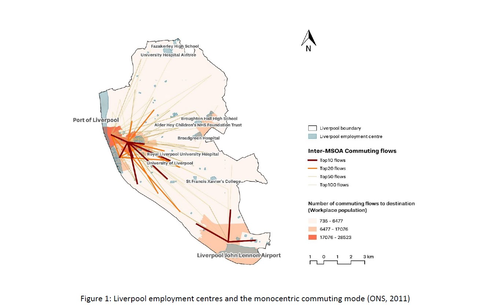
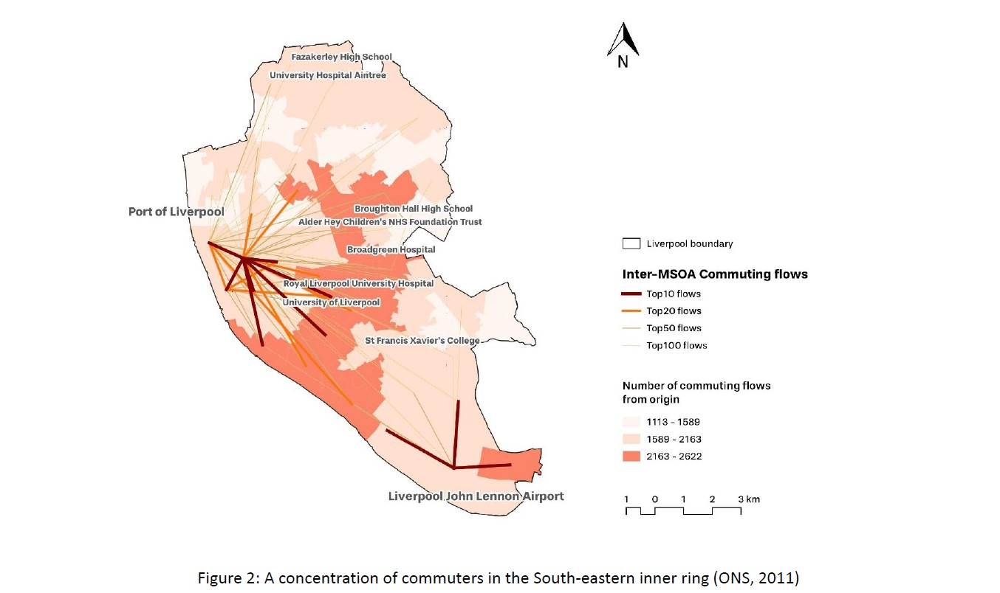
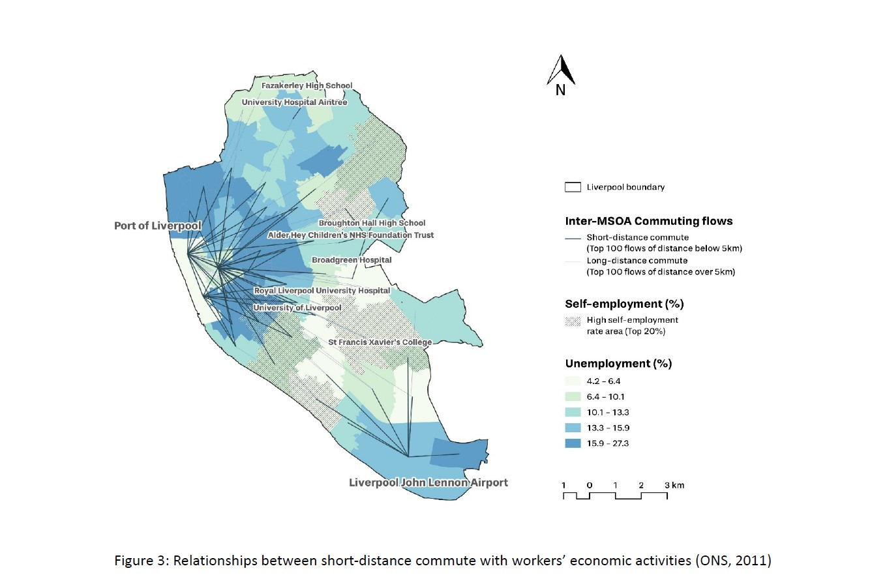
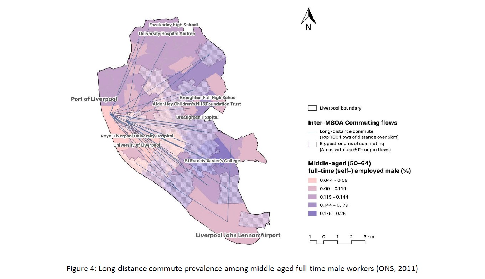
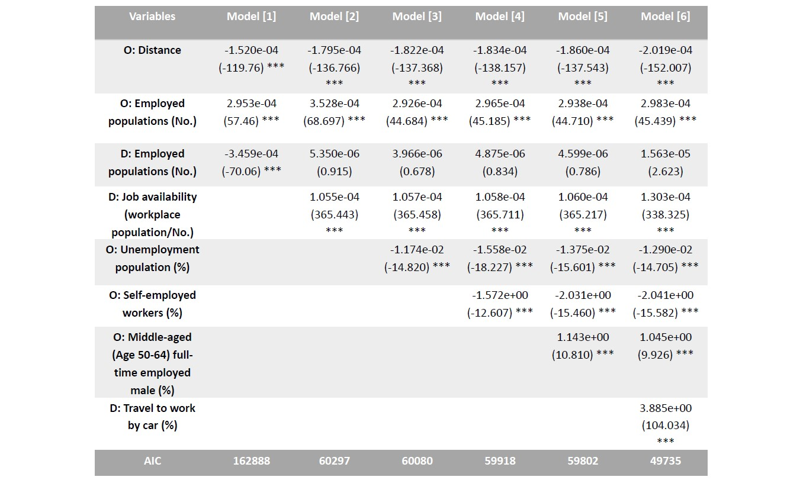
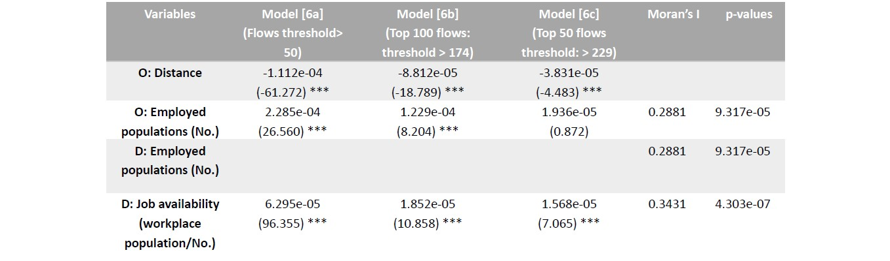
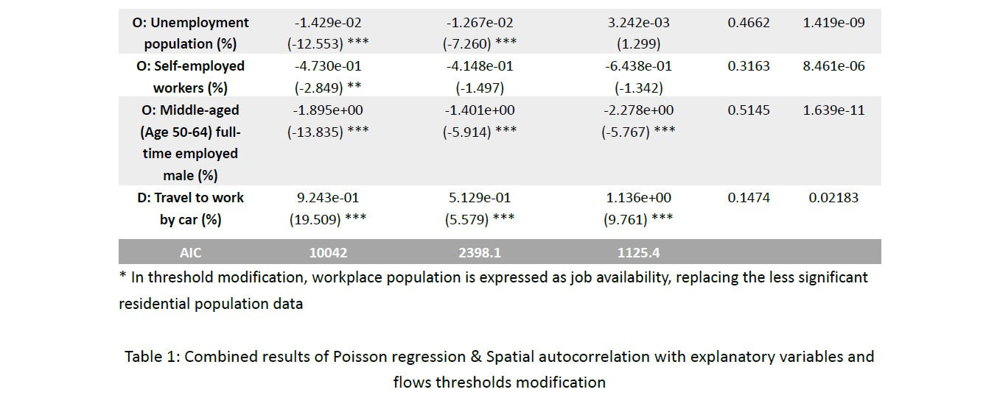
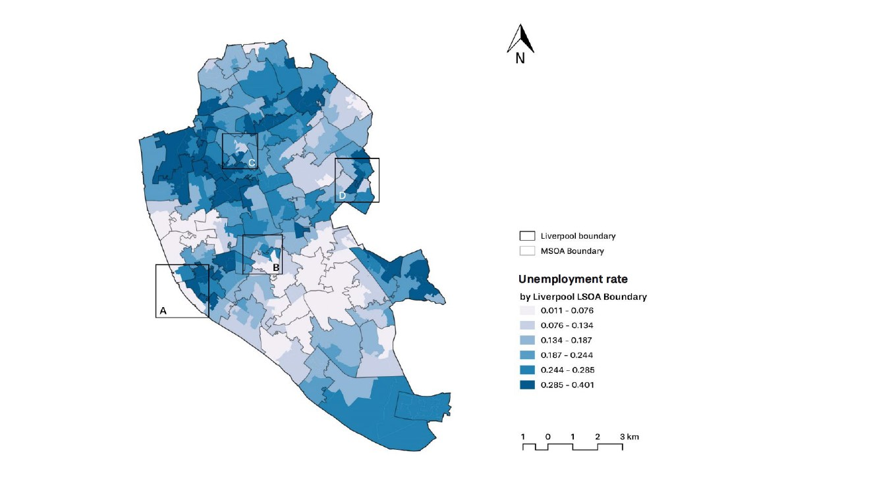

Exploring Liverpool Commuting Patterns and Push-And-Pull Variables
The dominant monocentric urban networks of British cities have been criticised as inefficient due to excessive commuting time and congestion costs (Gordon et al., 1989). An adaptable transformation to polycentric forms requires deeper understanding of intra-city labour markets and commuting patterns, yet empirical studies mainly focus on macro-scale spatial interaction models (Nielsen & Hovgesen, 2008). Attempting to enlighten municipal-level transport planning, this report will determine origin-destination flow patterns in Liverpool and their push-and-pull factors through GIS and statistical analysis.
Firstly, Liverpool travel-to-work mode is explored based on a combination of inter-MSOA commuter flow data and 2011 Census data. Then, the Poisson regression analysis is undertaken to predict the relations between the commuting scale and explanatory variables, which measure socio-economic and geodemographic characteristics of the workforce, including economic activity (unemployed/self-employed/full-time), age and gender (Sen, et al., 2021), and workplace-based factors such as job availability (McLafferty & Preston, 2010) and transport methods (Dargay & Hanly, 2007). Lastly, spatial autocorrelation tests will be applied to each factor to identify clustering effects.
Journeys-to-work in Liverpool demonstrates typical monocentric characteristics in which commute size declines radially as distance from the CBD increases (Figure 1). Although the Port Area and John Lennon Airport are two major employment centres that occupy the largest space and accommodate 25% of total inter-MSOA commuters, the former obtains three times the latter in the Top 100 flows. Job-housing separation under such an agglomeration pattern might cause the inner ring – the main residence of commuters – to be worst hit by metropolitan congestion (Figure 2; Weitz, 2003). The commute distance differs between social groups. Short-distance commutes to the city centre are concentrated in areas with more unemployment, while self-employed workers with flexible work schedule prefer to live farther from jobs (Shin, 2019; Figure 3). Long-distance commutes appear to be particular popular among middle-aged full-time male employees, whose distribution coincides with the biggest flows originating from the Eastern suburbs (Figure 4).
   Distance and job availability are two predominant push-and-pull factors, regardless of the changes in variables or thresholds. Car-travel mode has a positive correlation with the commuting scale but decreases as the threshold rises, whereas the unemployment rate becomes a pull factor for the top 50 flows. This could be explained by higher employment density in the city centre (where the greatest flows agglomerate) that helps support transit connection, which reduce the frequency of car journeys (Ding et al., 2017) and satisfying deprived communities' reliance on public transport services (Patterson et al., 2020).
The decreasing AIC values demonstrate the model’s improving explanatory power, but the threshold of Model 6c seems too high and causes economic activity factors to lose significance. The strongest spatial clustering with the highest significance is observed among middle-aged full-time male employees. Most factors manifest a modest level of spatial autocorrelation.
  This report investigates Liverpool’s monocentric commuting paradigm. Although economic agglomeration provides a city-wide workforce with easy radial movements, a more balanced job–housing relationship needs to be considered for to minimise commute costs. However, the whole analysis dependent on MSOA can result in modifiable unit problems (Figure 5), and generalising individual conditions with aggregate data might result in ecological fallacies.
Dargay, J. & Hanly, M. (2007) Volatility of car ownership, commuting mode and time in the UK, Transportation Research Part A: Policy and Practice, 41 (10), pp. 934-948, DOI: 10.1016/j.tra.2007.05.003.
Ding, C., Wang, D., Liu, C., Zhang, Y. & Yang, J. (2017) Exploring the influence of built environment on travel mode choice considering the mediating effects of car ownership and travel distance, Transportation Research Part A: Policy and Practice, 100, pp. 65-80. DOI: 10.1016/j.tra.2017.04.008.
Gordon, P., Kumar, A. & Richardson, W. R. (1989) The Influence of Metropolitan Spatial Structure on Commuting Time, Journal of Urban Economics, 26, pp. 138-151. DOI: 10.1016/0094-1190(89)90013-2
McLafferty, S. & Preston, V. (1991) Gender, Race, And Commuting Among Service Sector Workers, The Professional Geographer, 43 (1), pp. 1-15, DOI: 10.1111/j.0033-0124.1991.00001.x
Nielsen, T. A. S & Hovgesen, H. H. (2008) ‘Exploratory mapping of commuter flows in England and Wales’, Journal of Transport Geography, 16 (2), pp. 90-99. DOI: 10.1016/j.jtrangeo.2007.04.005
NOMIS (2014) Population (Workplace population) [Dataset]. Available from: https://www.nomisweb.co.uk/census/2011/wp101ew (Accessed: 28 March 2022)
Research Agency (2017). 2011 Census aggregate data. UK Data Service (Edition: February 2017). [Online] Available from: http://dx.doi.org/10.5257/census/aggregate-2011-2 (Accessed: 28 March 2022).
Patterson, R., Panter, J., Vamos, E. P., Cummins, S., Millett, C., Laverty, A. A. (2020) Associations between commute mode and cardiovascular disease, cancer, and all-cause mortality, and cancer incidence, using linked Census data over 25 years in England and Wales: a cohort study, The Lancet Planetary Health, 4 (5), pp. 186-194, DOI:10.1016/S2542-5196(20)30079-6.
Sen, S., Charles, M. B. & Harrison, J. L. (2021) Determinants of Commute Distance in South East Queensland, Australia: Implications for Usage-based Pricing in Lower-density Urban Settings, Urban Policy and Research, 39 (3), pp. 292-307, DOI: 10.1080/08111146.2021.1922376
Shin, E, J. (2019) Self-employment and travel behavior: A case study of workers in central Puget Sound, Transport Policy, 73, pp. 101-112. DOI: 10.1016/j.tranpol.2018.11.002
Weitz, J. (2003) Jobs–housing balance (Report No. 516). Chicago, IL: The American Planning Association.
Yongwan Chun & Daniel A. Griffith (2011) Modeling Network Autocorrelation in Space–Time Migration Flow Data: An Eigenvector Spatial Filtering Approach, Annals of the Association of American Geographers, 101:3, 523-536, DOI: 10.1080/00045608.2011.561070